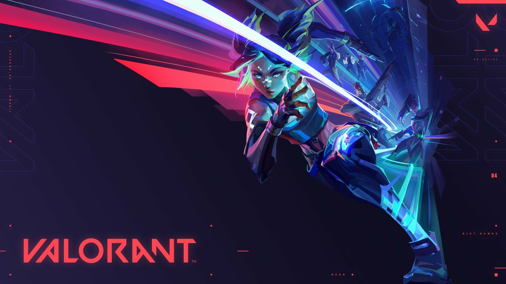

Counter Strike 1.3
Counter-Strike is an objective-based, multiplayer first-person shooter. Two opposing teams the Terrorists and the Counter Terrorists compete in game modes to complete objectives, such as securing a location to plant or defuse a bomb and rescuing or guarding hostages. At the end of each round, players are rewarded based on their individual performance with in-game currency to spend on more powerful weapons in subsequent rounds. Winning rounds results in more money than losing and completing objectives such as killing enemy players gives cash bonuses. Uncooperative actions, such as killing teammates, results in a penalty

Dota 2
Dota 2 is a multiplayer online battle arena (MOBA) video game developed and published by Valve. The game is a sequel to Defense of the Ancients (DotA), which was a community-created mod for Blizzard Entertainment's Warcraft III: Reign of Chaos. Dota 2 is played in matches between two teams of five players, with each team occupying and defending their own separate base on the map. Each of the ten players independently controls a powerful character known as a "hero" that all have unique abilities and differing styles of play. During a match players collect experience points and items for their heroes to successfully defeat the opposing team's heroes in player versus player combat. A team wins by being the first to destroy the other team's "Ancient", a large structure located within their base.

Valorant
Valorant is a team-based first-person hero shooter set in the near future.Players play as one of a set of Agents, characters designed based on several countries and cultures around the world. In the main game mode, players are assigned to either the attacking or defending team with each team having five players on it. Agents have unique abilities, each requiring charges, as well as a unique ultimate ability that requires charging through kills, deaths, orbs, or objectives. Every player starts each round with a "classic" pistol and one or more "signature ability" charges.Other weapons and ability charges can be purchased using an in-game economic system that awards money based on the outcome of the previous round, any kills the player is responsible for, and any objectives completed. It currently offers 18 agents to choose from. They are Brimstone, Viper, Omen, Cypher, Sova, Sage, Phoenix, Jett, Raze, Breach, Reyna, Killjoy, Skye, Yoru, Astra, KAY/O, Chamber, and Neon.

League of Legends
League of Legends is one of the world's most popular video games, developed by Riot Games. It features a team-based competitive game mode based on strategy and outplaying opponents. Players work with their team to break the enemy Nexus before the enemy team breaks theirs. League of Legends is a complex game which involves both high-level strategy and fast-paced gameplay. Skilled players know how to beat the opponent in front of them, while keeping the macro-elements in mind to support their team to victory.Each team assigns their players to different areas of Summoner's Rift, the most commonly used map in League of Legends, to face off against an opponent and attempt to gain control for their team. As the game progresses, players complete a variety of tasks, including collecting computer-controlled minions, removing turrets and eliminating champions.

Crossfire
CrossFire is an online tactical first-person shooter game developed by Smilegate Entertainment for Microsoft Windows. It was first released in South Korea on May 3, 2007. CrossFire is a free-to-play first-person shooter that features two mercenary corporations named the "Black List" and "Global Risk," fighting each other in an epic global conflict. Players assume the role of either a Black List or Global Risk mercenary, joining an online team that must work together to complete objective-based scenarios. Except for the Mutation and Wave modes, each mode can support a maximum of 16 players, each divided into an 8-man team. Players progress and eventually be promoted through various military ranks, beginning at trainee, with the highest being Marshall. Players can also customize their character's equipment and appearance through in-game items.Premium and special items like modified weapons can only be bought using monetary currencies.